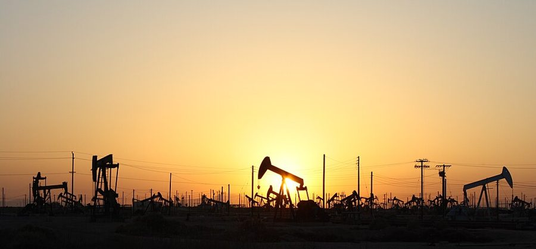

saturate the market
… will saturate the market eventually.
（产品）把市场吃满、卖到饱和
saturate 本义是浸透。想买的人都买过了，再热销也卖不动。
第 2 章后半把两只「动物」放进有限的世界：一家靠开采赚钱、拿利润扩张的公司，先去挖一块不会再长的油田，再去捞会自己长的鱼。结论很干脆：任何靠实物增长的系统迟早撞上限制，要问的不是会不会停，而是怎么停。好玩在两处反直觉：油田储量翻一倍，高峰只晚来十几年；渔船的技术变好，反而可能让鱼和渔业一起完蛋。读的时候盯住一件事：资源有没有流入。

02a 看了三只单存量的动物：恒温器、人口和工业资本、汽车经销商的库存，它们都活在没有约束的世界里，火炉永远不缺油。§5 开头先补上这一块：真实的东西都要从环境里拿资源、往外排废物，所以增长迟早撞上约束，书里把这种结构叫「成长上限」。接着两个双存量模型共用同一半：资本靠利润再投资长大，按 20 年寿命折旧。另一半是资源，§5 是不会再生的油，§6 是会再生的鱼。
别被带歪：§5「储量翻倍只多 14 年」是指数增长的算术，前提是公司一直想让资本每年净长 5%，价格和运营成本都不变。它戳破「储量大就安全」的直觉，但不是对哪块真实油田的预测。
一个靠消耗资源扩张的系统，资源多给一倍，能多撑多久？
读的时候带着这几个问题，读完回来对照「检查一下理解」。
这一页是原书和译本第 2 章的最后两节。粗体是本站给的节名，后面是档和译本字数；下面一行是译本的小标题和这一节在译本电子书里开头的几个字，再下面是英文原书的小标题和开头几个词。读完打个勾。
先把这一页用到的几个概念用书外的例子讲一遍。作者拿它们推出什么，读原书时自己看。后面各页用到时会链回这里。
一个东西靠增强回路越长越快：一门网课，学员越多，口碑越响，来报名的人越多。可它长在一个有限的世界里，总有一样东西越来越紧：想学这门课的人就那么多，被拉完了，新报名自然变少。这个越收越紧的约束是一个调节回路，它或者压低流入、或者加大流出，迟早从增强回路手里接过主导权（主导地位转换）。所以要问的不是会不会停，而是停在哪、怎么停。
它是一种系统基模：常见的结构，产生眼熟的行为，第 5 章还有一串。别和 1972 年那本书《增长的极限》（The Limits to Growth）混：英文是同一个词，书是这一派最有名的报告，这里说的是一种结构。
在这一页：§5 开头。译本：「基本模型」就是附录术语表的系统基模，记一个名字就够。
不可再生的资源像一笔一次到账的遗产：钱全在那儿，花多快只看你有多大本事花，花得越快，用得越短。可再生的资源像一片果园：每年结的果子可以一直摘下去，但每年最多摘到它结的那么多；想多摘只能砍树，树少了，往后每年结得更少。前者卡在存量有多大，后者卡在流量有多快。还有一种可再生的不靠自己长：河水、风、阳光，不管今年用掉多少，明年照样流进来。
在这一页：§5 的油田、§6 的渔场共用这张结构；§6 那两句页边金句把差别说破。模拟器里切换两种资源看。
很多生物资源的再生是两头低、中间高：鱼太密，吃的和地方不够，几乎不长；稀一点，长得越来越快；再少下去，鱼找不到同伴、地盘被别的物种占了，又越长越慢。少到某个程度，再生的能力本身就坏了，这个点叫临界阈值。掉过它，就算停手，也可能长不回来，可再生资源实际上成了不可再生的。线上社区也有这种事：活跃的人少到一定程度，新人发帖没人回，走得更快。
在这一页：§6 讲再生率那段和结尾的总结。02a 恒温器那里的「转折点」说的是调节回路被压垮的点，和这里说的是两件事。
过冲是冲过一个能长期维持的水平，然后回来，或者回不来。倒车入库，刹得晚就压过线再往前挪一点；刹得太晚，就撞墙。渔场里的那条线是鱼每年最多能再生多少。船队靠利润扩张，捕捞量会冲过这条线；之后看刹车（鱼少了，利润薄了，少添船）来得快不快：快，回落后稳住；慢，在线附近来回摆；太慢，鱼掉过临界阈值，鱼和渔业一起没了。
书里的三种结局都是先过冲，差别在后面。译本：「过度开发，然后逐渐适应」这类说法把「冲过头」和「捕得太多」混成一件事，读的时候换成过冲。
在这一页：§6 的三张图和三种结局。模拟器里拉「捕捞技术」，三种都能看到。
先猜：一块油田的储量，按刚开始的开采速度够采 200 年。公司每年拿利润添设备，想让设备每年净增 5%。开采高峰大约在第几年？如果地质学家后来发现储量其实是两倍，高峰会晚多少年？
两个存量：资源（地下的油，或海里的鱼）和资本（采油设备，或渔船）。资本靠利润再投资长大，按寿命折旧。先选一种资源，三张图依次是每年采多少、资本有多少、资源还剩多少。打开页面时是书里那一组数。
需要浏览器打开脚本才能运行。
各个控件。两种资源共用的：资本一开始是 5 个单位；设备或渔船的寿命，油田固定 20 年，渔场可调，每年报废资本的「1 ÷ 寿命」；每年添多少设备，取利润和「增长目标」里小的那个，利润是负的就不添。「每年想净增」是扣掉折旧以后的增长，书里是 5%（添 10%、报废 5%）。
油田：「油田有多大」是地下一共有多少油，1000 就是按开头每年采 5 的速度够采 200 年；油越少，每台设备一年采到的越少，最后一点几乎采不动。「油价」默认固定 3；选「越稀缺越贵」，每台设备采得越少，油价越高，最高到 10，这时假设涨价也不减需求。「运营成本」是每单位设备每年的开销，技术进步就是把它往下拉。
渔场：鱼最多 1000，一开始是满的；鱼的再生两头低、中间高，每年最多再生约 288。「捕捞技术」是鱼变少以后一条船还能捞到多少：0 最差，鱼一少就捞不到；2 最好，鱼很少时也照样捞得到。0、1、2 分别是书里三组图的设置。「渔船能用多少年」越长，船队缩得越慢。
和书后附录的模型方程比，本站改了三处，都是为了和原书的图对上：油田的运营成本默认每单位资本每年 1（附录写 10%，按 10% 算，基本情形的资本要到第 61 年才见顶，图上和正文都是第 50 年左右）；渔场每一步算四分之一年、跑 150 年（附录写一年一步、跑 100 年，图的横轴是 150 年）；价格曲线上两个点微调过。
这个模拟器做不到的：找到新油田、把投资挪到别处、换用别的能源；涨价让人少用油；鱼掉到很低以后，过几十年又长回来再来一轮（模型里鱼少到一定程度就几乎不再长）。临界阈值也不是一个能直接调的旋钮，它藏在再生曲线鱼很少的那一端。
读英文原书时值得停一下的词和句：熟词生义、Meadows 的口语和比喻。灰色斜体是原句里连续的几个词，在英文电子书里搜它就能找到；标「每个字都认识」的，是每个词都眼熟、合起来意思却变了的，最容易读错。点「记下」收进词本。
对着译本读这两节时，下面这些地方会把人读歪。方框里是译本的原句，在译本电子书里搜它就能找到；灰色斜体是英文原书那一处。只收意思错了、反了、漏了的，措辞上的出入不收。全书的勘误汇总在译本勘误。
… nutrients and protection from pests.
译本：「也少不了昆虫的袭扰」
原文列的是玉米要从环境里拿到的东西：水、养分，还有防虫。译本把需要的保护说成了躲不开的麻烦，方向正好反了。
… I could assume that resource depletion …
译本：「我们假设资源枯竭可以通过运营成本」
原文：我「也可以」假设资源枯竭同时推高运营成本，现实里两样都有，不管哪种，行为模式都一样。模型实际只用了单位资本产出下降这一条。译本写成「我们假设」，又加了一句原文没有的油田被废弃，读来像模型两样都算了。
… The last and most expensive of …
译本：「（如图2—25所示）」
这一段讲基本情形：第 14 年翻倍、第 40 年左右开采见顶、第 50 年资本开始缩，对应的是图2—24。图2—25 是下一段储量翻倍的图，翻过去对不上。
… makes a difference of only about …
译本：「都会使开采高峰期延长14年左右」
原文的重点在 only：储量每翻一倍，高峰只晚来约 14 年，靠它吃饭的工作和社区也只多这么久。译本丢了「只」，后面还加了「繁荣期也相应地延长了」，读来像个好消息。图2—25 的图注倒是写对了。
… little added time to develop alternatives.
译本：「只能稍微延长一些开发的时间而已」
原文：储量翻倍、翻两倍，留给开发替代品的时间也多不了多少。译本丢了「替代品」，成了开发资源本身的时间，这句话的用意没了：找出路要时间，指数增长不给这个时间。
… a higher price won’t decrease demand.
译本：「价格过高将减少需求」
原文：假设短期内这种资源对消费者太要紧，涨价也不会让需求减少，所以资源一稀缺，价格就陡升。译本把前提译反了，和后面「价格会快速升高」接不上。模拟器「越稀缺越贵」用的是原文的前提。
… as has actually happened, for example …
译本：「就可能出现类似情况」
原文说技术降低运营成本「确实发生过」，举了三个实例：油井的强化采油，从采空的铁矿里选出低品位的铁燧岩，用氰化物从金银矿的尾矿里再提金银。译本说成「可能出现」，实例成了假设。
… eventually will there be global ones?
译本：「这些公司最终还会展开全球性运作吗」
原文：单个矿、油田、地下含水层会枯竭，公司也早早把投资挪到别处；可局部有极限，最终全球会不会也有？这是她故意留给读者自己争的问题。译本问成公司会不会全球化，问题本身就没了。
… As price goes up with increasing scarcity …
译本：「价格上涨加大了资源的稀缺性」
原图注是：随着资源越来越稀缺，价格上涨，利润多了，资本堆得更高。因是稀缺，果是涨价，译本倒过来了。
Unless, perhaps, the economy can learn …
译本：「我们应该尝试建立」
原文只有半句：除非，也许，经济能学会完全靠可再生资源运转。这是给上面那段算术留的一个例外，语气是存疑的；§6 接着就去看可再生资源会怎样，答案并不轻松。译本改成了一条号召。
… costs more, in terms of capital, to …
译本：「我们假设渔业资源由于日益稀缺而价格上涨」
原文：和油田一样，鱼越少，捕到同样多就要花越多的资本：更大的船、声纳、冷冻设备。讲的是单位资本产量下降。价格随稀缺上涨是模型里另一条关系，不是这一句。
… Or miles-long drift nets are …
译本：「装备数海里长的拖网」
流刺网垂在海里随海流漂，鱼撞上去被网眼卡住；拖网（trawl）是船拖着走的网，两样渔具。联合国大会 1991 年 12 月通过决议，要求 1992 年底前在公海全面暂停大型流刺网作业。
… a high and steady harvest rate …
译本：「但是可以一直保持较高且稳定的效率」
原文：船队不能永远扩张，但能永远保持又高又稳的捕捞量。这是可再生资源的要点：能一直采，每年有个上限。前一句还丢了「（投资降得）够快」：能稳住，是因为刹车来得及时。
… The result can be a nearly …
译本：「但结果只能是鱼和捕鱼业接近彻底消亡」
原文是 can be：技术再好下去，结果「可能」是鱼和渔业几乎都没了。这是模型的一种情形，取决于阈值和刹车，§6 结尾专门讲了三种结局。「只能是」把可能写成了必然。
… become especially vulnerable to pollution or storms …
译本：「都可能使鱼群彻底灭绝」
原文只说很小的鱼群对污染、风暴、基因不够多样特别脆弱，同一段最后一句还说资源也可能撑下来、再长回来。storms 是风暴，不是龙卷风。
… overshoot and adjustment to a sustainable …
译本：「过度开发，然后逐渐适应」
overshoot 是冲过一个能长期维持的水平，再看回不回得来。三种结局都以它开头，第一种冲过头以后稳住了。译成「过度开发」，像是在说捕多了就错，三种结局的区别反而模糊了。图2—29、2—30 图注里的「过量增长」「过度开发」也是它。
下面是作者在这两节里的主张，本站按主张之间的逻辑重排，不按原书顺序；每条后面是节号，拿不准就回书里那一节再读一遍。
她说任何实物在增长的系统，迟早会碰上某种约束，约束表现为一个调节回路，削弱流入或加大流出，改变增强回路的主导地位。这些回路现在不起主导作用，也一定在那里。资源可不可再生，差别不在能不能一直长，而在增长多半怎样结束。
§5够采 200 年的油田，资本每年长 5%，开采 40 年左右就见顶，到第 50 年设备的维护费压过收入，资本开始缩。储量翻一倍、翻两倍，高峰每次只晚约 14 年，涨得越高越快，摔得越远越快，留给开发替代品的时间也多不了多少。
§5A quantity growing exponentially toward a constraint or limit reaches that limit in a surprisingly short time.— §5。本站译：一个按指数增长、朝着某个约束或极限去的量，会在短得出人意料的时间里撞上它。
想尽快赚钱的人，只关心储量多大；靠油田吃饭的工人和社区，还要关心资本想长多快。她说管理不可再生资源真正的选择，是很快发大财，还是富得少一点但富得久。涨价、技术降成本都让资本在塌之前堆得更高；她只指出，按这套动态，储量越大、新发现越多，高峰之后摔得越早越狠。全球会不会有极限，她留给读者去争。
§5不可再生资源受限于存量，采得越快用得越短；可再生资源受限于流量，能一直采，但每年最多采到它再生的量。采得比再生快，可能被压到临界阈值以下。真实的资源有的还能长回来，像新英格兰的森林已是第三轮；有的不能，这要看资源被压得很低的那段时间里发生了什么。
§6渔场先过冲，然后稳住、振荡还是崩溃，看两样：再生能力受损的临界阈值在哪；资源变少时，压住资本增长的调节回路够不够快、够不够强。更高效的捕鱼技术让这个回路变弱，她称之为又一个「高杠杆，方向错」。
§6The fleet can’t grow forever, but it can maintain a high and steady harvest rate forever.— §6。本站译：船队不能永远扩张，但它能永远保持又高又稳的捕捞量。
合起来：看一个正在增长的东西，先问它靠的是一次性的存量还是会再生的流量，再问约束收紧时刹车来不来得及。靠存量的，多给一倍最多换来约一个翻倍时间；靠流量的，能一直采，但刹车慢了会采塌。
这一章合起来：第 2 章用几个小模型演示结构怎样决定行为。单存量的三只：恒温器说明目标要把流失算进去，反馈只能影响以后；人口和资本说明回路的主导地位会转换，外表不相干的系统结构相似，行为就相似；汽车库存说明调节回路里有延迟很可能带来振荡，把反应弄快反而更糟。双存量的两只说明，有限的世界里实物增长迟早撞上约束：靠不可再生资源的，涨得越快塌得越快；靠可再生资源的，结局是稳住、振荡还是崩溃，看刹车来得快不快。
处境是本站编的，放在你可能遇到的地方。先自己想，再点开看分析；有的题不只一个答案。全书的情境题汇总在情境题。
一家创业公司刚拿到一笔融资。按现在的团队规模，每月的开销够撑 40 个月。创始人计划每月把团队扩大 5%，开销跟着涨。投资人安慰说：别担心，下一轮再拿到同样多的钱，跑道就翻倍了。先不算公司的收入。
照每月扩 5% 的计划，这笔钱大约撑多久？再拿到同样多的钱，能多撑多久？
账上的钱是一个只出不进的存量，每月开销是流出，按每月 5% 长，约 14 个月翻一倍。累计花掉的钱追上 40 个月的量，只要约 22.5 个月；钱多一倍，约 33 个月，只多 10 个月左右；多到四倍，约 45 个月。选 B。
这和 §5 储量翻倍最多把高峰推迟约一个翻倍时间是同一种算术。容易错选 C：以为钱多一倍，时间也多一倍，可开销在第二笔钱到账时已经比当初大多了。真正能改的数是增长率：团队不扩，40 个月就是 40 个月。现实里还有收入这股流入，收入涨得够快，就不只是在烧存量；这道题只看开销那一半。
书里对应：§5 系统2.1：一个可再生性存量受到另外一个不可再生性存量约束的系统
一个新茶饮品牌进入一座城市。门口排队的人多，路过的人就想试试；每家店赚的钱用来开新店，店越开越快。开到第 60 家，老店的单店销量开始往下走，新店离老店越来越近。总部认为是营销不够，打算把门店一口气扩到 120 家抢地盘，钱从新一轮融资里出。
增强回路和调节回路各在哪？城市里「每周愿意买一杯的人」更像油还是更像鱼？扩到 120 家可能会怎样？
增强回路：店多，利润多，开新店。调节回路：店越多，每家分到的常客越少，单店利润降，开店该慢下来。这是成长上限，单店销量下滑是约束在收紧，不是营销的问题。常客更像鱼：喝腻的人过一阵会回来，新搬来的人也会补进来，每周能卖的杯数有个上限，属于流量受限。
用融资扩到 120 家，等于利润在降时照样加资本，相当于把渔场的刹车拆了：单店销量可能压到养不起店，一批店一起关。更稳的做法是看单店利润，让开店速度跟着它走。如果是靠打折拉来、喝腻了就不再回来的人，那一部分更像油，用一次少一次。
书里对应：§5 成长上限；§6 系统2.2：有两个可再生性存量的系统
一位工程师赶一个大版本，连续三个月每周工作 70 小时。头几周效率反而比平时高；第二个月开始，晚上睡不好，周末补觉也缓不过来。版本上线后休了两周假，回来还是提不起劲，又过了几个月才恢复到原来的状态。
把精力看成一种资源，它是存量受限还是流量受限？「休两周还缓不过来」说明了什么？
精力像会再生的资源：睡觉和休息把它补回来（流入），干活消耗它（流出）。长期每天能稳定用掉的，最多就是每天补回来的，所以是流量受限。头几周效率高，是在动用攒下的存量，就像渔场头几十年捕捞量还能一路涨。
透支久了，补的能力本身受了伤：睡不好、休息不解乏，相当于再生率在存量很低的那一端掉了下去，这就是临界阈值的意思。掉过它，停下来也要很久才长回来。容易误判成「歇几天就好」：以为只是用掉了一笔存量，没想到补的能力也伤了。这是比方，具体到人，恢复要多久因人而异。
书里对应：§6 系统2.2：有两个可再生性存量的系统
Meadows 1993 年写成初稿，书 2008 年出版。下面挑出这一页里能被后来的研究或事情检验的说法，分「书里 / 当时 / 今天」几栏，并给一个结论。结论判的是标题里「书里的说法：」后面那一句。全书的这一节汇总在今天怎么看。
读完作者的主张，再看它站不站得住。每一块摆出三样：主流怎么看，作者怎么看，本站的评论。最后一句是本站对这一页的总体判断。
主流看法：很多经济学家认为，价格、技术和替代品会不断扩大能用的资源。最有名的是 Julian Simon 和 Paul Ehrlich 的赌约：1980 年赌五种金属十年后的实际价格，1990 年结算，五种全跌，Ehrlich 寄去 576.07 美元认输。后来有人算过，换成别的十年，两人大约各赢一半；拉长到 1980–2011 年，Simon 五种里要输四种。
作者的看法：资本按固定比例增长时，储量翻倍、翻两倍只多出很少时间；涨价和技术进步让资本堆得更高、摔得更狠。全球会不会有极限，她不下结论。§5
本站的评论：「多一倍只多 14 年」就是 5% 增长的翻倍时间（70 ÷ 5），是模型假设下的算术，不是对哪块油田的观测，她也写明了这一组的价格和运营成本都假设不变。这条算术很好用：凡是按百分比增长的消耗碰上一个固定的存量，多给一倍最多只换来约一个翻倍时间。Simon 一派说对的地方，是真实世界里「存量」本身会变：新发现、新技术、替代品，这几条回路正是模型里没有的。两边真正的分歧，是这几条回路跑得够不够快。
主流看法：渔业经济学的经典是 H. Scott Gordon 1954 年在《政治经济学杂志》上的文章：鱼没有主人，谁不捕谁吃亏，渔船会一直加到利润被耗光为止，船和捕捞远多于划算的水平。后来的管理办法多从这里出发：总量配额、可交易的个人配额、禁渔期和禁渔区。
作者的看法：结局看刹车：资源变少时，压住资本增长的调节回路够不够快、够不够强；提高效率的技术让刹车变软，是又一个「高杠杆，方向错」。§6
本站的评论：她的模型里只有一个「船队」，刹车只靠利润下降。Gordon 补上了刹车为什么不灵：每条船只看自己的账，鱼少了还能赚一点就继续出海，谁也不愿先退。北方鳕鱼最后靠的是政府下令停捕，从模型外面踩了一脚。程序员也见过这种事：没有配额的共享连接池、公共 API，常常被用到刚好撑不住。第 5 章的「公地悲剧」会接着讲这一类。
本站的总体看法：这两节把「增长会停」讲成了结构问题：资源有没有流入，刹车快不快。油田模型的数是假设出来的，不能当预测，但「指数增长碰上固定存量」的算术站得住；北方鳕鱼三十年没长回来，也支持「采过头可能回不来」。
先在心里答，再点开。答错的那题，回书里把对应那一节再读一遍。
有限的环境里，没有哪个实物系统能永远长。再热销的产品也会卖满市场，病毒也会找不到可感染的人。约束现在不占主导，不等于不存在。
资本每年净长 5%，约 14 年翻一倍，开采跟着翻；同时油越少越难采，每台设备采得越少。到第 50 年左右，维护设备的开销压过收入，资本开始缩。
约 14 年。资本按 5% 增长，翻倍时间约 14 年，多一倍的资源最多只够多约一个翻倍时间。
储量有多大，和公司想让资本长多快。增长目标低，高峰低、来得晚，工作和社区维持得更久。
不可再生的一开始就全在那儿，采多快主要看设备，采得越快用得越短。可再生的能一直采，但每年最多采到它再生的量；采得比再生快，可能掉过临界阈值，实际上变成不可再生。
鱼少了，船还能捞到差不多，利润降得晚，资本继续长，刹车变软。系统可能从稳住变成振荡，技术再好下去，鱼和渔业一起崩溃。
资源再生能力受损的临界阈值在哪；资源变少时，压住资本增长的调节回路有多快、多强。
用一句话说这一页：
想一想：你工作或生活里，有没有一种资源正被你按百分比扩张地用着（服务器预算、团队的精力、某个渠道的新用户）？它是一次性的存量，还是每年会补回来的流量？如果是后者，每年能补回来多少？
读过又忘了，从这里想起来。挑的是这一页最值得记住的例子和说法，不按原书顺序；每条后面是节号，想细看就回书里那一节。全书各页的这一节都收在全书回顾。
一句话：增长迟早撞上约束；靠存量的涨得越快塌得越快，靠流量的能一直采，刹车慢了也会采塌。
按开头的速度够采 200 年的油田，资本每年净长 5%，开采第 40 年左右就见顶；到第 50 年利润付不起维护，设备一年年报废。
§5地质学家发现储量是两倍、四倍，高峰每次只晚来约 14 年，涨得更高，摔得更狠。
§5对靠油田吃饭的工人，要紧的是储量和公司想长多快。增长目标越低，高峰越低、来得越晚，饭碗端得越久。
§5刹车来得及时的渔场，捕捞量冲过头以后稳在一个每年都能再生出来的量上。
§6技术让船在鱼少时也有钱赚，刹车变软：渔场从稳住变成来回摆，再进一步，可能鱼和渔业一起没了。
§6